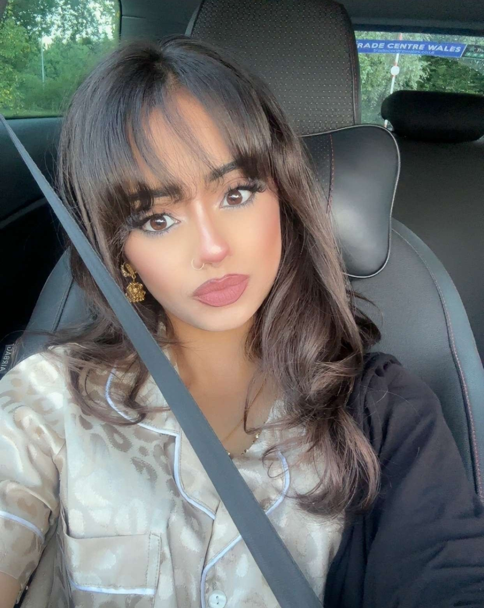
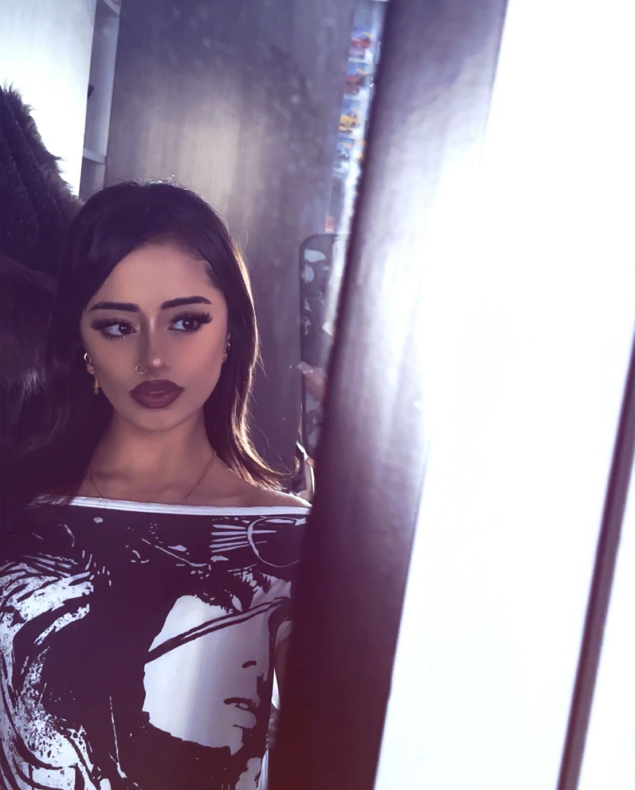
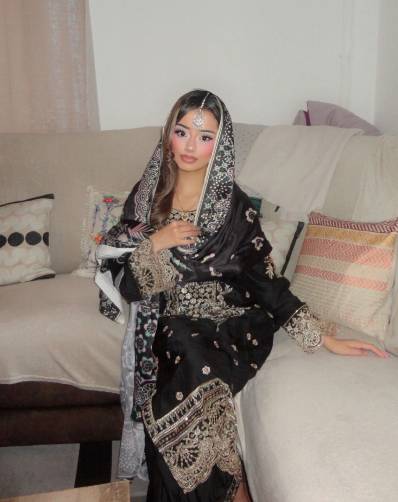
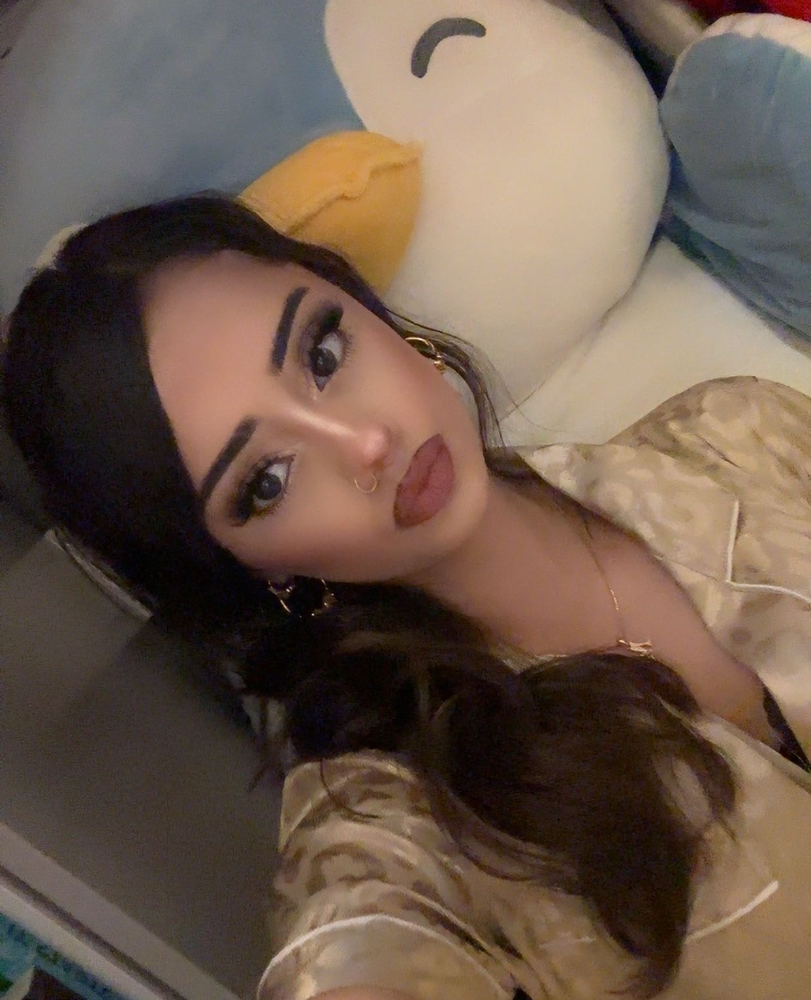

My Princess ♡

pretty girl ♡
my princess 🎀 one of my favourites ♡
one of my favourites ♡
 Us 🌸
Us 🌸

always that sofa spot ♡
always beautiful 💗A simple website i always wanted to make — for the memories, the little things I notice abt u, and all the words and things I never want to leave unsaid.
open my heart ↓
pretty girl ♡
my princess 🎀
one of my favourites ♡
Us 🌸

always that sofa spot ♡
always beautiful 💗Not just the big things. Every tiny Maryam thing that made you, you.
You didn't just become part of my life. Loving you changed my view on life and the way I understand love itself.
You helped me realise that loving somebody isn't only about knowing in my own head that I love them. They need to be able to feel it too. You taught me how important it is to actually say what I feel, to show affection, to not be afraid of showing it, to give reassurance and to make the person I love feel chosen instead of assuming they should already know.
You made me realise how much the little things matter. Replying properly, choosing to making time, choosing them over others, planning things, showing up on time and when needed, being affectionate in public, being proud of the person you're with, appreciating what they do for you, telling those around about ur person and never letting effort become something you simply expect. Things that I never understood the importance of, things that were basic parts of love that i failed to show consistently.
You taught me that communication can't just happen when everything is already going wrong. I want to be someone who speaks about what he feels, listens properly when something hurts the person he loves and tries to understand it before defending themselves, making the other feel heard. I learned that sometimes listening and making somebody feel understood matters more than trying to defend myself and ur intentions dont matter as much as the hurt u cause with ur actions and thats what the focus should always be.
You made me look at the way I prioritise people. I understand now that love needs intention. It means making room for somebody in your life, not only fitting them in when it's convenient. It means making memories, planning dates, giving them your time even when ur with friends or family or studying and showing through your actions that they have an important place in your world.
You helped me become less afraid of being soft. Writing letters, saying I miss you, giving reassurance, being openly affectionate, posting the person I love, doing thoughtful things and letting people see that I care used to feel harder for me than they should have. The only opinion that matters the most is of the ones i love.
You also taught me a lot about appreciation. I wish I had understood some of it while you were giving it to me, but I understand now how precious patience, loyalty, reassurance, affection and somebody's time really are. I don't want to take those things for granted again.
Most importantly, you made me want to become a better man — not just so I could prove something to you, but because loving you showed me parts of myself that I genuinely wanted to change. Some of those lessons came painfully late, but they're still lessons I will carry with me for the rest of my life. I know a part of you will always hate the way i let u hurt for so long without changing, the way i made u wait and the trust i broke by not changing myself intime. Im sorry it took you having to make the painful decision of leaving for me to be open to understand that i wasnt doing enough like i thought i was.
So even beyond all the memories and everything I love about you, thank you for the ways knowing you changed me. A part of the person I'm becoming exists because I got to love you. Ill take this version of me throughout my life and ill never stop trying to improve
Thank you for everything. Thank you for being such a beautiful person for me to love, not only on the outside but on the inside too. You were an incredible person to love and you taught me so much about love, about myself, and about the kind of person I want to be.
I know there were times you needed me to show my feelings for you and I didn't do it in the way you deserved. I hate that it took losing so much for me to understand some of the things you had been asking from me all along. I'm sorry for the ways I hurt you. I know you've forgiven me for things, but I still wanted you to know that I understand them differently now and i dont say this in hopes you'll believe and come back I say this as i truly mean it regardless of what happens to us.
I don't want these words to be me trying to convince you to stay. I don't want love to feel like pressure. I just had so much love for you sitting inside me that I never properly knew how to say and I couldn't leave it forever unsaid. Ive always wnated to do this for you and now i finally can.
I'm proud of you. I'm proud of the person you are, the things you've carried, the ways you've grown and everything you're still becoming. Whatever happens from here doesn't erase what this chapter of my life meant to me. It was real. You were real. The love I had for you was real.
There are a thousand tiny things about you that I know I'll remember at random — a song, a smell, a stupid word, Hello Kitty, an iced latte, certain films or shows, a certain shade of pink and so much more — and for a second they'll take me back to you.
I will always love the time spent loving you, Maryam. I will never regret getting to know you so closely or having the privilege of seeing all those tiny sides of you that the rest of the world doesn't always get to see.
More than anything, Regardless of whether we ever get back together again, I hope life becomes gentle with you. I hope the things that weigh on you become lighter. I hope you become everything you've dreamed of becoming. And I hope, no matter where life takes us, you always know that ur special to me and you were loved very, very deeply. You will always remain a part of my prayers and may Allah finally make life easier for ur soul and may he help you find peace in urself forever. Ameeen
With all my heart,
Haseeb ♡